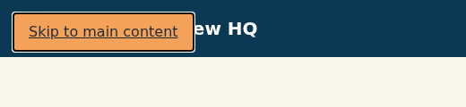
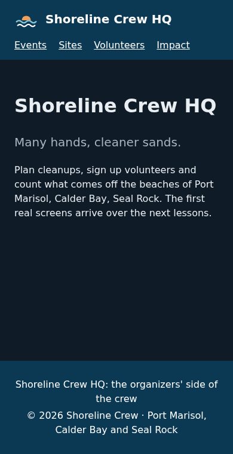
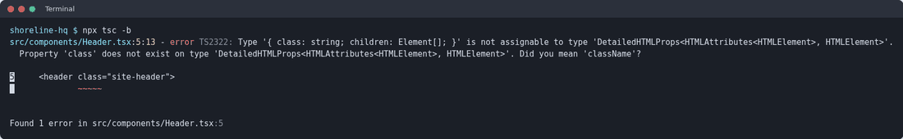

🧩 Lesson 3.1: Components and TSX
Module 2 gave you the language. Module 3 gives you the screen. Today you meet React: a library that draws a page from functions you write, and keeps it in step with your data. You will write markup inside TypeScript (TSX), watch TypeScript check every tag and attribute, and build your first components. By the end, Shoreline Crew HQ stops being a heading on a blank page and becomes an app with a header, a logo, a footer and the crew's own colors, in light and dark mode, on a laptop and on a phone.
🎯 Learning Objectives
By the end of this lesson, you will be able to:
- Explain how React turns your component functions into what the browser shows, and why rendering must be pure
- Write TSX: one parent element, closed tags,
classNameand other camelCase attributes, and{expressions}in braces - Read the errors TypeScript reports for TSX, including attributes that do not exist and values React cannot draw
- Write components as typed functions with named exports, one per file, and compose them into a tree
- Import an image into a component and explain how TypeScript knows its type
- Give Shoreline Crew HQ its shell:
AppLayout,Header,Footer, aHomePage, the brand colors and the favicon
📦 Code for this lesson
Starting code: lesson-07-start.zip · Finished code: lesson-07-end.zip. Each folder has a README with the commands to run it. Copy .env.example to .env.local in shoreline-hq before npm run dev.
In This Lesson
🌊 How React Draws a Page
Think about how you would show a list of cleanups with plain JavaScript. You would find an element with document.querySelector, create rows with createElement, set their text, append them, and then, when a cleanup fills up, find the right row again and change it. Every change to the data means remembering which parts of the page to fix by hand. That style is called imperative: you give the browser step-by-step instructions.
React is declarative. You write a function that says what the page should look like for the data you have now. React calls it, compares the answer with what is already on the screen, and changes only the parts that differ. When the data changes, React calls your function again. You never write "find the third row and change its text"; you describe the result, and React works out the steps.
💡 Mental model: the tide chart
The crew does not repaint the harbor's tide board by scraping off yesterday's numbers one at a time. Each morning they print a fresh chart from the tide tables and pin it up, and anyone looking at the board sees today's tides. Your components are the printer: given today's data, they produce a fresh description of the page. React is the person at the board who notices that only two numbers changed and swaps just those, so the board never flickers.
From main.tsx to the screen
You have had a React app since Lesson 1.2; it just has not done much yet. Open src/main.tsx and read its first lines again with this in mind:
import { StrictMode } from 'react'
import { createRoot } from 'react-dom/client'
import './index.css'
import App from './App.tsx'
import { getEvents } from './api/client.ts'
createRoot(document.getElementById('root')!).render(
<StrictMode>
<App />
</StrictMode>,
)
// ...createRoothands React one element of the page, the empty<div id="root">inindex.html. Everything React draws goes inside it.render(<App />)says "draw theAppcomponent here". React calls yourAppfunction.- The function returns React elements: small plain objects that describe a tag, its attributes and its contents. They are not real page elements yet, just a description, cheap to make and cheap to compare.
- React compares the description with the page and creates or changes real DOM elements to match. This step is called rendering, and doing it again after data changes is a re-render.
You may read that React "uses a virtual DOM". That phrase means exactly steps 3 and 4: a lightweight description that React compares before it touches the slow, real page. <StrictMode> is a helper for development only; you will see one of its effects later in this lesson.
Why this matters
React is the most widely used way to build web interfaces, and it runs well beyond the browser: the React Native course that follows this one builds the crew's phone app with the same components, the same TypeScript and the same thinking. Teams pick React because a page described from data is easier to reason about, test and change than a page patched by hand. Learning to think "the screen is a function of the data" is the skill that transfers to every React job.
🏷️ TSX: Markup Inside TypeScript
Components return their description in TSX: HTML-like tags written directly in TypeScript, in files that end in .tsx. (In plain JavaScript the same idea is called JSX, in .jsx files.) Here is a tiny component:
const crewName = 'Shoreline Crew'
export function Greeting() {
return <h1 className="title">{crewName} HQ</h1>
}Browsers do not understand TSX. Before your code runs, a compiler turns every tag into a function call. This is what TypeScript writes for that file when it compiles it with the HQ's "jsx": "react-jsx" setting (Vite's own compiler produces the same kind of calls):
import { jsxs as _jsxs } from "react/jsx-runtime";
const crewName = 'Shoreline Crew';
export function Greeting() {
return _jsxs("h1", { className: "title", children: [crewName, " HQ"] });
}That is the whole secret. <h1 className="title"> became a call to React's jsxs function with the tag name, the attributes as an object, and the contents as children. The call returns the plain-object element from the diagram above. Two consequences follow, and they explain most of the TSX rules:
- Tags are values. A component returns one value, so it must return one element (which may contain many).
- Attributes are object properties. They use JavaScript's names, not HTML's, and their values have types.
The import ... from "react/jsx-runtime" line is added for you. That is why the HQ's files never say import React from 'react', which older tutorials put at the top of every file.
Rule 1: attributes use JavaScript names
The best way to learn the rules is to break them and read what TypeScript says. Create src/Scratch.tsx in shoreline-hq (your experiment file for this lesson, deleted at the end), paste this in, and run npx tsc -b:
export function SignInField() {
return (
<div class="field">
<label for="email">Email</label>
<input id="email" type="email" maxlength="80" />
</div>
)
}Expected output (npx tsc -b)
src/Scratch.tsx:3:10 - error TS2322: Type '{ class: string; children: Element[]; }' is not assignable to type 'DetailedHTMLProps<HTMLAttributes<HTMLDivElement>, HTMLDivElement>'.
Property 'class' does not exist on type 'DetailedHTMLProps<HTMLAttributes<HTMLDivElement>, HTMLDivElement>'. Did you mean 'className'?
3 <div class="field">
~~~~~
src/Scratch.tsx:4:14 - error TS2322: Type '{ for: string; children: string; }' is not assignable to type 'DetailedHTMLProps<LabelHTMLAttributes<HTMLLabelElement>, HTMLLabelElement>'.
Property 'for' does not exist on type 'DetailedHTMLProps<LabelHTMLAttributes<HTMLLabelElement>, HTMLLabelElement>'. Did you mean 'htmlFor'?
4 <label for="email">Email</label>
~~~
src/Scratch.tsx:5:38 - error TS2322: Type '{ id: string; type: "email"; maxlength: string; }' is not assignable to type 'DetailedHTMLProps<InputHTMLAttributes<HTMLInputElement>, HTMLInputElement>'.
Property 'maxlength' does not exist on type 'DetailedHTMLProps<InputHTMLAttributes<HTMLInputElement>, HTMLInputElement>'. Did you mean 'maxLength'?
5 <input id="email" type="email" maxlength="80" />
~~~~~~~~~
Found 3 errors in the same file, starting at: src/Scratch.tsx:3Three errors, and each one ends with the fix. Read the first from the bottom up: class does not exist on DetailedHTMLProps<HTMLAttributes<HTMLDivElement>, HTMLDivElement>, React's type for "everything a <div> accepts". Did you mean className? class and for are reserved words in JavaScript, so React uses the DOM's property names className and htmlFor; attributes with several words are camelCase: maxLength, tabIndex, onClick. Two exceptions keep their dashes: aria-* and data-* attributes are written exactly as in HTML.
Notice what just happened. TypeScript knows every HTML element and every attribute it accepts, with their types: width takes a number or a string, href a string. In plain JSX, these mistakes would reach the browser; in TSX, they are red underlines while you type.
Rule 2: return one element (or a fragment)
export function SiteHeading() {
return (
<h2>Pelican Point Beach</h2>
<p>Port Marisol</p>
)
}Expected output (npx tsc -b)
src/Scratch.tsx:3:5 - error TS2657: JSX expressions must have one parent element.
3 <h2>Pelican Point Beach</h2>
~~~~~~~~~~~~~~~~~~~~~~~~~~~~
4 <p>Port Marisol</p>
~~~~~~~~~~~~~~~~~~~~~~~
Found 1 error in src/Scratch.tsx:3A function returns one value, and two side-by-side tags would be two. Wrap them in a parent. When a <div> would add nothing but a box, use a fragment, the empty tag <> ... </>, which groups elements without adding anything to the page:
export function SiteHeading() {
return (
<>
<h2>Pelican Point Beach</h2>
<p>Port Marisol</p>
</>
)
}Rule 3: close every tag
HTML forgives <img>, <br> and <input> without a closing tag. TSX does not: every element is closed, either with its closing tag or with /> at the end (<br />, <img ... />). Any element without children may close itself, including your own components: <Header />. You will meet the error for this in the project.
Rule 4: braces hold expressions
Inside TSX, curly braces switch back to TypeScript. Anything that produces a value can go in them:
const title = 'Weekend Cove Cleanup'
const capacity = 18
const spotsTaken = 18
const site = { name: 'Driftwood Cove', town: 'Port Marisol' }
export function CleanupSummary() {
return (
<section className="cleanup-summary">
{/* A comment inside TSX goes in braces too */}
<h2>{title.toUpperCase()}</h2>
<p>{site.name}, {site.town}</p>
<p>{capacity - spotsTaken} of {capacity} spots left</p>
<p>{spotsTaken >= capacity ? 'Full: join the waiting list' : 'Spots open'}</p>
</section>
)
}npx tsc -b is silent. Braces work in contents ({title.toUpperCase()}), in calculations ({capacity - spotsTaken}) and with the conditional operator (? :, a choice between two values). Comments go in braces too: {/* ... */}. What braces cannot hold is a statement: no if, no for, no const. Those go above the return, in the function body, where you can use all of TypeScript. (Lesson 3.3 shows the patterns for lists and for "show this only when".)
What can React draw? Strings and numbers become text. true, false, null and undefined draw nothing at all, which Lesson 3.3 puts to work. An array of drawable things draws each one. An object does not, and TypeScript knows. Change the site line to <p>{site}</p>:
Expected output (npx tsc -b)
src/Scratch.tsx:11:10 - error TS2322: Type '{ name: string; town: string; }' is not assignable to type 'ReactNode'.
11 <p>{site}</p>
~~~~~~
node_modules/@types/react/index.d.ts:2361:9 - The expected type comes from property 'children' which is declared here on type 'DetailedHTMLProps<HTMLAttributes<HTMLParagraphElement>, HTMLParagraphElement>'
2361 children?: ReactNode | undefined;
~~~~~~~~
Found 1 error in src/Scratch.tsx:11ReactNode is React's type for "anything React can draw": text, numbers, elements, the nothing-values and arrays of these. An object with a name and a town is not one of them; you must say which property to show. Without TypeScript this mistake surfaces in the browser as a blank page and the error "Objects are not valid as a React child".
One small TSX habit appears in today's project: line breaks between text and a {expression} are dropped, so when a sentence wraps onto the next line right before a brace, you write {' '} at the end of the line to keep the space.
🧩 Components Are Typed Functions
A component is a function that returns TSX, whose name starts with a capital letter. You use it like a tag:
function SiteName() {
return <strong>Driftwood Cove</strong>
}
export function SiteLine() {
return (
<p>
<SiteName /> is a mixed beach in Port Marisol.
</p>
)
}<SiteName /> inside SiteLine tells React "call SiteName and put what it returns here". Components using components form a tree, and the whole HQ will be one: App at the top, pages and cards further down. Splitting a page into components lets each piece have one job, one file and one name, and lets you reuse a piece wherever it is needed.
Where are the types?
Nothing in that code has an annotation, yet everything is typed. The return type is inferred: hover over SiteLine in VS Code and you see that it returns a JSX.Element (TypeScript's error messages shorten it to Element), React's type for one element. That inference is all a component needs, so the course does not write return types on components. The types you will write are for the component's inputs. Try giving SiteName some information:
<SiteName town="Port Marisol" /> is a mixed beach in Port Marisol.Expected output (npx tsc -b)
src/Scratch.tsx:8:17 - error TS2322: Type '{ town: string; }' is not assignable to type 'IntrinsicAttributes'.
Property 'town' does not exist on type 'IntrinsicAttributes'.
8 <SiteName town="Port Marisol" /> is a mixed beach in Port Marisol.
~~~~
Found 1 error in src/Scratch.tsx:8Attributes on a component become an object passed to the function, called props. SiteName declares no parameter, so it accepts no props (only React's own, such as key, which is what IntrinsicAttributes means). Lesson 3.2 is all about typing props. For today, notice that TypeScript checks every place a component is used, exactly as it checks every call to a function.
The capital letter matters
TSX decides what a tag means by its first letter: lowercase is an HTML element, capitalized is your component. Rename SiteName to siteName (in both places) and check:
Expected output (npx tsc -b)
src/Scratch.tsx:1:10 - error TS6133: 'siteName' is declared but its value is never read.
1 function siteName() {
~~~~~~~~
src/Scratch.tsx:8:7 - error TS2339: Property 'siteName' does not exist on type 'JSX.IntrinsicElements'.
8 <siteName /> is a mixed beach in Port Marisol.
~~~~~~~~~~~~
Found 2 errors in the same file, starting at: src/Scratch.tsx:1Two errors tell one story. <siteName /> is read as an HTML element called siteName, which does not exist in JSX.IntrinsicElements (TypeScript's list of HTML tags), and so your function is never used (TS6133, the unused-variable check from Lesson 1.2). Components are always PascalCase: SiteName, AppLayout, EventCard.
One component per file, named exports
In the HQ, each component lives in its own file named after it (Header.tsx holds Header) and is shared with a named export, as Lesson 2.4 decided for everything the course adds: export function Header(), imported as import { Header } from './Header.tsx'. Components are written as function declarations, the course style since Lesson 2.3. Vite's template used export default App; today you switch App to a named export too, and see the error that the switch produces.
Rendering must be pure
React calls your components whenever it needs a fresh description: at the start, after data changes, and sometimes when you would not expect it. So a component should behave like a math function: the same inputs give the same TSX, and calling it changes nothing outside it. That property is called purity. Here is a component that breaks it; npx tsc -b has no complaint, so run the linter:
export function Greeting() {
const hour = new Date().getHours()
return <h2>{hour < 12 ? 'Good morning, crew' : 'Hello, crew'}</h2>
}Expected output (npm run lint)
> shoreline-hq@0.0.0 lint
> oxlint
⚠ react(purity): Cannot call impure function during render
╭─[src/Scratch.tsx:2:16]
1 │ export function Greeting() {
2 │ const hour = new Date().getHours()
· ─────┬────
· ╰── Cannot call impure function
3 │ return <h2>{hour < 12 ? 'Good morning, crew' : 'Hello, crew'}</h2>
╰────
help: `Date` is an impure function. Calling an impure function can produce unstable results that update unpredictably when the component re-renders
note: React Compiler skipped optimizing this component or hook. Additional guidance: https://react.dev/reference/eslint-plugin-react-hooks/lints/purity
Found 1 warning and 0 errors.
Finished in 7ms on 11 files with 116 rules using 20 threads.The type is fine, so TypeScript is quiet; oxlint knows React's rules. new Date() gives a different answer on every call, so the same component could draw two different greetings for the same data. (A warning is still worth fixing: the course's checks require zero.) Reading the clock correctly needs state and effects from Modules 3 and 4; for today's footer, which only needs the year, you will read the date once when the file loads, outside the component.
React even tests purity for you. In development, <StrictMode> calls each component twice and throws one answer away, so an impure component shows its problem early. Put console.log('HomePage rendered') at the top of a component during the project and the browser console shows:
Expected output (the browser console, dev server)
Download the React DevTools for a better development experience: https://react.dev/link/react-devtools
HomePage rendered
HomePage rendered
Loaded 10 cleanups. First: Storm Debris SweepTwo "rendered" lines for one page load: that is Strict Mode, not a bug in your code, and it happens only on the dev server. (The first line is React's suggestion to install its DevTools, which you will do in the project; the last is your temporary line from Lesson 2.4.)
🖼️ Images and Their Types
Today's header shows the crew's logo, an SVG file in src/assets/. A component imports it like code:
import logoUrl from '../assets/logo.svg'An SVG is not TypeScript, so how does TypeScript know what logoUrl is? Remember "types": ["vite/client"] in tsconfig.app.json (Lesson 2.4). Vite's declaration file describes every kind of file Vite can import. Here is its entry for SVG, from node_modules/vite/client.d.ts:
declare module '*.svg' {
const src: string
export default src
}A declare module for a pattern: "any import ending in .svg has a default export that is a string". The string is the file's address after the build (Vite may even tuck a small file into the JavaScript), so <img src={logoUrl} /> always points at the right place. Files in public/, like the favicon, are not imported at all: they are copied as they are and referenced by path, /favicon.svg.
Every <img> needs an alt. Describe what the picture tells the user, or write alt="" when the picture adds nothing that the text next to it does not already say. The HQ's logo sits next to the words "Shoreline Crew HQ", so it is decorative: alt="" tells screen readers to skip it, instead of reading "logo, Shoreline Crew HQ" twice.
⚠️ Common Mistakes
⚠️ return on a line of its own
JavaScript ends a return statement at the end of the line when nothing follows it. Put the TSX on the next line without an opening parenthesis, and the function returns nothing:
function SiteName() {
return
<strong>Driftwood Cove</strong>
}
export function SiteLine() {
return (
<p>
<SiteName /> is a mixed beach in Port Marisol.
</p>
)
}Expected output (npx tsc -b)
src/Scratch.tsx:9:8 - error TS2786: 'SiteName' cannot be used as a JSX component.
Its type '() => void' is not a valid JSX element type.
Type '() => void' is not assignable to type '(props: any) => Promise<ReactNode> | ReactNode'.
Type 'void' is not assignable to type 'Promise<ReactNode> | ReactNode'.
9 <SiteName /> is a mixed beach in Port Marisol.
~~~~~~~~
Found 1 error in src/Scratch.tsx:9The error points at the place the component is used: SiteName's inferred type is () => void, and React needs a function that returns something drawable. npm run lint points at the cause instead, with "Unreachable code" on the stranded <strong>. The fix is the habit in every HQ file: return ( on the same line, the TSX inside the parentheses.
⚠️ HTML habits in TSX
Pasting HTML from a design or an old page brings class, for, unclosed <br> and <img>, lowercase attributes and <!-- comments -->. TypeScript catches the first four and names the fix; an HTML comment is a syntax error in TSX, so use {/* ... */}. Exercise 1 is exactly this conversion.
⚠️ Mixing default and named imports
import App from './App.tsx' asks for a default export; import { App } from './App.tsx' asks for a named one. When they do not match, TS2613 says so and offers the right line, as you will see in Step 5. Named exports keep this simple: the import always uses the component's real name, in braces.
⚠️ Expecting the dev server to check types
As in Lesson 1.2, npm run dev shows a page even when TSX has type errors, and some of those errors draw something wrong instead of crashing. Keep an eye on VS Code's red underlines, and run npx tsc -b before you call a step done.
🛠️ Project: The HQ Shell
Every screen the HQ gains from now on (events, sites, volunteers, the impact chart) sits inside the same frame: a header with the crew's logo and navigation, the page's own content, and a footer. Today you build that frame from four components, give the app the crew's colors, and replace Vite's favicon with the crew's logo. When you are done, the tree looks like this:
Start both servers first (as in Lesson 1.2: node server.ts in shoreline-api, npm run dev in shoreline-hq) and keep http://localhost:5173 open: the page updates every time you save. Delete src/Scratch.tsx if you still have it.
Step 1: The crew's colors (10 min)
Shoreline Crew has a small palette: Deep Tide for the header and footer, Sea Teal for links, Sunrise for highlights, Sand for the page, Ink for text. Replace everything in src/index.css with this:
/* Shoreline Crew HQ: the crew's colors and base styles (Lesson 3.1) */
:root {
/* Brand colors */
--deep-tide: #0b3954;
--sea-teal: #1f6f8b;
--sunrise: #f4a259;
--sand: #fbf6ec;
--ink: #1f2a37;
--muted: #5b6573;
--white: #ffffff;
/* What the page uses: these change in dark mode */
--page: var(--sand);
--text: var(--ink);
--text-muted: var(--muted);
--link: var(--sea-teal);
color-scheme: light dark;
font-family: system-ui, 'Segoe UI', Roboto, sans-serif;
line-height: 1.5;
color: var(--text);
background: var(--page);
}
@media (prefers-color-scheme: dark) {
:root {
--page: #0f1b26;
--text: #e9eef3;
--text-muted: #a9b4c0;
--link: #7cc6d6;
}
}
body {
margin: 0;
}
#root {
display: flex;
flex-direction: column;
min-height: 100vh;
}
a {
color: var(--link);
}
/* Hidden until a keyboard user tabs to it */
.skip-link {
position: absolute;
top: -4rem;
left: 1rem;
padding: 0.5rem 1rem;
background: var(--sunrise);
color: var(--ink);
}
.skip-link:focus {
top: 1rem;
}
.site-header {
display: flex;
flex-wrap: wrap;
align-items: center;
justify-content: space-between;
gap: 0.75rem 2rem;
padding: 0.75rem 1.5rem;
background: var(--deep-tide);
color: var(--white);
}
.brand {
display: flex;
align-items: center;
gap: 0.75rem;
color: inherit;
font-size: 1.25rem;
font-weight: 700;
text-decoration: none;
}
.site-nav ul {
display: flex;
flex-wrap: wrap;
gap: 0.25rem 1.25rem;
margin: 0;
padding: 0;
list-style: none;
}
.site-nav a {
color: var(--white);
}
.page {
flex: 1;
width: 100%;
max-width: 60rem;
margin: 0 auto;
padding: 2rem 1.5rem;
box-sizing: border-box;
}
.lead {
color: var(--text-muted);
font-size: 1.25rem;
}
.site-footer {
padding: 1.5rem;
background: var(--deep-tide);
color: var(--white);
text-align: center;
}
.site-footer p {
margin: 0.25rem 0;
}- The colors are custom properties (CSS variables) on
:root, used withvar(--name). The first group names the brand; the second says what each color is for, and only that group changes in dark mode. Every pair of text and background was checked for contrast: at least 4.5 to 1, the WCAG level for normal text. @media (prefers-color-scheme: dark)follows the visitor's system setting. The header and footer stay Deep Tide in both modes.#rootis thedivReact draws into; making it a full-height column lets the footer sit at the bottom even on a short page.- The class names (
site-header,brand,page...) are the ones the components will use inclassName. One global file is fine for a shell this size; in Lesson 3.6 each component gets its own CSS Module, so styles cannot collide as the app grows.
Save, and the page turns sand-colored. main.tsx already imports ./index.css, which is how Vite knows to load it.
Step 2: The logo and the favicon (6 min)
The crew's logo is a small SVG: a sunrise over two waves in a Deep Tide circle. In shoreline-hq, make three folders for today's files (one command per line, the same in PowerShell):
mkdir src/assets
mkdir src/components
mkdir src/pagesCreate src/assets/logo.svg with this content:
<svg xmlns="http://www.w3.org/2000/svg" viewBox="0 0 64 64" role="img" aria-labelledby="sc-logo-title">
<title id="sc-logo-title">Shoreline Crew</title>
<defs><clipPath id="sc-logo-clip"><circle cx="32" cy="32" r="31"/></clipPath></defs>
<g clip-path="url(#sc-logo-clip)">
<rect width="64" height="64" fill="#0b3954"/>
<circle cx="32" cy="35" r="12" fill="#f4a259"/>
<rect x="0" y="35" width="64" height="29" fill="#0b3954"/>
<path d="M6 39c4.3-4 8.7-4 13 0s8.7 4 13 0 8.7-4 13 0 8.7 4 13 0" fill="none" stroke="#7cc6d6" stroke-width="4" stroke-linecap="round"/>
<path d="M9 49c4-3.5 7.7-3.5 11.5 0s7.7 3.5 11.5 0 7.7-3.5 11.5 0 7.7 3.5 11.5 0" fill="none" stroke="#ffffff" stroke-width="3.5" stroke-linecap="round"/>
</g>
</svg>The same picture becomes the browser tab's icon. index.html already links /favicon.svg, the Vite logo in public/; copy the crew's logo over it:
cp src/assets/logo.svg public/favicon.svgReload the page and look at the tab: the sunrise has replaced Vite's lightning bolt. (Browsers cache favicons stubbornly; if the old one stays, open the page in a new tab.)
Step 3: Header (12 min)
Create src/components/Header.tsx:
import logoUrl from '../assets/logo.svg'
export function Header() {
return (
<header className="site-header">
<a className="brand" href="/">
<img src={logoUrl} alt="" width={40} height={40} />
<span>Shoreline Crew HQ</span>
</a>
<nav className="site-nav" aria-label="Main">
<ul>
<li><a href="/events">Events</a></li>
<li><a href="/sites">Sites</a></li>
<li><a href="/volunteers">Volunteers</a></li>
<li><a href="/impact">Impact</a></li>
</ul>
</nav>
</header>
)
}- The import gives
logoUrlthe typestring, from Vite's declaration. The<img>hasalt=""because the name is right beside it, and awidthandheightas numbers in braces, so the browser reserves the space before the file arrives. - Semantic elements carry meaning for assistive technology:
<header>is the page's banner,<nav>a navigation region, andaria-label="Main"names it, so a screen reader announces "Main navigation". The links are a list, because they are one. - The four links are placeholders. The HQ is a single-page app: every address loads the same
index.html, so/eventsshows this same home page for now. In Lesson 6.1, React Router turns them into real pages.
Nothing changes on screen yet: a component only appears when another component uses it.
Step 4: HomePage and Footer (10 min)
The heading and tagline move out of App.tsx into a page component. Create src/pages/HomePage.tsx:
const crewName = 'Shoreline Crew'
const tagline = 'Many hands, cleaner sands.'
const towns = ['Port Marisol', 'Calder Bay', 'Seal Rock']
export function HomePage() {
return (
<>
<h1>{crewName} HQ</h1>
<p className="lead">{tagline}</p>
<p>
Plan cleanups, sign up volunteers and count what comes off the beaches of{' '}
{towns.join(', ')}. The first real screens arrive over the next lessons.
</p>
</>
)
}A fragment, because the page returns three elements side by side and the layout will supply the parent. Three expressions in braces, one of them a method call, and the {' '} that keeps the space before the town names. The constants sit outside the function: they never change, so there is no reason to rebuild them on every render. (Pages get their own folder because in Module 6 each one becomes a route.)
Now src/components/Footer.tsx:
// Read once, when the app loads: rendering itself stays pure
const year = new Date().getFullYear()
export function Footer() {
return (
<footer className="site-footer">
<p>Shoreline Crew HQ: the organizers' side of the crew</p>
<p>© {year} Shoreline Crew · Port Marisol, Calder Bay and Seal Rock</p>
</footer>
)
}The year is read once, when the file is loaded, so Footer itself stays pure (the purity rule from earlier). © works in TSX as in HTML and draws ©.
Step 5: AppLayout, and App as a named export (10 min)
The layout puts the pieces in order. Create src/components/AppLayout.tsx:
import { HomePage } from '../pages/HomePage.tsx'
import { Footer } from './Footer.tsx'
import { Header } from './Header.tsx'
export function AppLayout() {
return (
<>
<a className="skip-link" href="#main">
Skip to main content
</a>
<Header />
<main id="main" className="page">
<HomePage />
</main>
<Footer />
</>
)
}- The first element is a skip link. Keyboard and screen-reader users would otherwise tab through the logo and four links on every page before reaching the content. The CSS hides it above the window until it has focus; its
href="#main"jumps to<main id="main">. - There is exactly one
<main>, holding the page's content. For now the layout always showsHomePage; in Lesson 3.2 it learns to hold whatever page it is given. - Imports from the same folder start with
./, from a sibling folder with../, and keep the.tsxextension, as every file in the HQ does.
Replace src/App.tsx completely. Its constants moved to HomePage, and it now has a named export:
import { AppLayout } from './components/AppLayout.tsx'
export function App() {
return <AppLayout />
}Save, and the page goes blank. The browser console has the same complaint Node made in Lesson 2.4, "The requested module '/src/App.tsx' ... does not provide an export named 'default'" (with a number added to the address). Run npx tsc -b for the clearer version:
Expected output (npx tsc -b)
src/main.tsx:4:8 - error TS2613: Module '"/Users/you/shoreline/shoreline-hq/src/App"' has no default export. Did you mean to use 'import { App } from "/Users/you/shoreline/shoreline-hq/src/App"' instead?
4 import App from './App.tsx'
~~~
Found 1 error in src/main.tsx:4TS2613 is the import mismatch from Common Mistakes, and its "Did you mean" is the fix. (The path in the message is your own folder.) Change this line in src/main.tsx, and leave the rest of the file, including Lesson 2.4's temporary getEvents() lines, as it is:
import './index.css'
-import App from './App.tsx'
+import { App } from './App.tsx'
import { getEvents } from './api/client.ts'Save. The shell appears.

Header, the page's content from HomePage, and Footer, all placed by AppLayout and colored by the brand tokens in index.css.Step 6: Try it on every screen, meet React DevTools, check (10 min)
Test the shell like a user would:
- Keyboard: click the address bar, then press Tab once. The skip link appears; press Enter and the next Tab starts after the header.
- Phone size: open your browser's device toolbar (Ctrl+Shift+M with DevTools open in Chrome or Edge, ⌘ Cmd+Shift+M on a Mac) and pick a phone. The header wraps.
- Dark mode: switch your system to dark mode (or, in Chrome's DevTools, Rendering panel, Emulate CSS media feature prefers-color-scheme).
- The links: click Events. The address changes to
/eventsand the same home page loads: the placeholder doing its honest job until Lesson 6.1.

<main id="main">.
prefers-color-scheme: dark block swaps the page, text and link colors.Now look at the tree you built. Open the browser console on the dev server and you find this line from React:
Expected output (the browser console, dev server)
Download the React DevTools for a better development experience: https://react.dev/link/react-devtoolsReact Developer Tools is a free browser extension from the React team for Chrome, Edge and Firefox; the link in the message leads to it. Install it, reload the page, and DevTools gains a Components tab that shows your component tree (App, AppLayout, Header, HomePage, Footer) rather than the HTML elements. Selecting a component highlights it on the page. It is optional today, but you will lean on it once components hold props and state, and Lesson 5.3 uses its Profiler to measure renders.
Then break the shell on purpose, once each, running npx tsc -b after each change and undoing it (Ctrl+Z, or ⌘ Cmd+Z on a Mac):
- In
Header.tsx, changeclassName="site-header"toclass="site-header". - In
Header.tsx, remove the/at the end of the<img ... />line. - In
Footer.tsx, move theconst year = ...line inside the function (above thereturn) and runnpm run lintinstead.

class is not one of them, and the last line of the message names the fix: className.Expected output (2: the img not closed)
src/components/Header.tsx:7:10 - error TS17008: JSX element 'img' has no corresponding closing tag.
7 <img src={logoUrl} alt="" width={40} height={40}>
~~~
Found 1 error in src/components/Header.tsx:7Mistake 3 brings back the react(purity) warning from earlier, now in your own footer. Undo all three, then run the full check:
npx tsc -b
npm run lint
npm run buildExpected output (npm run build)
> shoreline-hq@0.0.0 build
> tsc -b && vite build
vite v8.3.8 building client environment for production...
✓ 22 modules transformed.
computing gzip size...
dist/index.html 0.46 kB │ gzip: 0.30 kB
dist/assets/index-Yb3Ln9bF.css 1.46 kB │ gzip: 0.67 kB
dist/assets/index-DDPdfoJp.js 223.13 kB │ gzip: 69.97 kB
✓ built in 105ms22 modules instead of Lesson 2.4's 17: the four components and the logo. The CSS file grew with the brand styles. (Times, sizes and hashes will differ.) npm run lint should end with "Found 0 warnings and 0 errors."
Your own project: sketch the shell of the app you are planning for Lesson 11.1. What goes in its header, which four or five links will its navigation have, and what belongs in the footer? Write the component tree as an indented list, the way the diagram above shows the HQ's, and pick two or three colors with a light and a dark version each.
✅ Project Completion Checklist
- ☐
src/index.cssholds the brand colors as custom properties, with a dark-mode block - ☐
src/assets/logo.svgexists andpublic/favicon.svgis the same file; the browser tab shows the sunrise - ☐
Header,FooterandAppLayoutinsrc/components/,HomePageinsrc/pages/, each a named export - ☐
App.tsxexportsAppby name andmain.tsximports it in braces - ☐ The skip link appears on the first Tab, and the shell works at phone size and in dark mode
- ☐ I produced TS2613, TS2322 (
class), TS17008 and the purity warning, and can say what each one protects - ☐
npx tsc -b,npm run lintandnpm run buildall pass, andsrc/Scratch.tsxis deleted
🏋️ Hands-on Exercises
Exercises 1 and 2 are part of the lesson (about 15 minutes together, included in the lesson time). Work in src/Scratch.tsx, check with npx tsc -b, and delete the file afterwards. If you want to see a component, put it under the paragraph in HomePage for a moment (and import it), then take it out again.
🏋️ Exercise 1: From HTML to TSX
The crew's old website had this "Before you come" box. Turn it into a component called PackingList that draws the same thing:
<!-- What to bring -->
<section class="packing-list">
<h2>Before you come</h2>
<ul>
<li>Closed-toe shoes</li>
<li>Water bottle<br>(refills at the meeting point)</li>
<li>Sun hat</li>
</ul>
<label for="packed">Packed and ready</label>
<input type="checkbox" id="packed">
</section>💡 Hint
Five changes: the HTML comment, class, for, and two elements that need to be closed. Paste the HTML into a return ( ... ) first and let npx tsc -b and the red underlines guide you.
✅ Solution
export function PackingList() {
// What to bring
return (
<section className="packing-list">
<h2>Before you come</h2>
<ul>
<li>Closed-toe shoes</li>
<li>
Water bottle
<br />
(refills at the meeting point)
</li>
<li>Sun hat</li>
</ul>
<label htmlFor="packed">Packed and ready</label>
<input type="checkbox" id="packed" />
</section>
)
}The HTML comment became a TypeScript comment above the return (a {/* ... */} inside the section would work too). className and htmlFor replace class and for, and <br /> and <input ... /> close themselves. Putting <br /> on its own line is just tidy formatting. The htmlFor/id pair still connects the label to the checkbox, so clicking the words ticks the box.
🏋️ Exercise 2: Read the errors, fix the component
A teammate's first component does not pass the check. Put it in src/Scratch.tsx, run npx tsc -b, and fix every error so that the second paragraph reads "Meet at Pelican Point Beach, 08:30" and the first shows the cleanup's title:
const nextCleanup = { title: 'Tide Pool Morning Cleanup', site: 'Pelican Point Beach', start: '08:30' }
function startTime() {
return <time>{nextCleanup.start}</time>
}
export function NextCleanup() {
return (
<section class="next-cleanup">
<h2>Next cleanup</h2>
<p>{nextCleanup}</p>
<p>Meet at {nextCleanup.site}, <startTime /></p>
</section>
)
}💡 Hint
tsc reports four errors, but two of them are one mistake seen from two sides. Read each message's last line first.
Expected output (npx tsc -b)
src/Scratch.tsx:3:10 - error TS6133: 'startTime' is declared but its value is never read.
3 function startTime() {
~~~~~~~~~
src/Scratch.tsx:9:14 - error TS2322: Type '{ class: string; children: Element[]; }' is not assignable to type 'DetailedHTMLProps<HTMLAttributes<HTMLElement>, HTMLElement>'.
Property 'class' does not exist on type 'DetailedHTMLProps<HTMLAttributes<HTMLElement>, HTMLElement>'. Did you mean 'className'?
9 <section class="next-cleanup">
~~~~~
src/Scratch.tsx:11:10 - error TS2322: Type '{ title: string; site: string; start: string; }' is not assignable to type 'ReactNode'.
11 <p>{nextCleanup}</p>
~~~~~~~~~~~~~
node_modules/@types/react/index.d.ts:2361:9 - The expected type comes from property 'children' which is declared here on type 'DetailedHTMLProps<HTMLAttributes<HTMLParagraphElement>, HTMLParagraphElement>'
2361 children?: ReactNode | undefined;
~~~~~~~~
src/Scratch.tsx:12:38 - error TS2339: Property 'startTime' does not exist on type 'JSX.IntrinsicElements'.
12 <p>Meet at {nextCleanup.site}, <startTime /></p>
~~~~~~~~~~~~~
Found 4 errors in the same file, starting at: src/Scratch.tsx:3✅ Solution
const nextCleanup = { title: 'Tide Pool Morning Cleanup', site: 'Pelican Point Beach', start: '08:30' }
function StartTime() {
return <time>{nextCleanup.start}</time>
}
export function NextCleanup() {
return (
<section className="next-cleanup">
<h2>Next cleanup</h2>
<p>{nextCleanup.title}</p>
<p>Meet at {nextCleanup.site}, <StartTime /></p>
</section>
)
}startTime was lowercase, so <startTime /> meant an HTML tag that does not exist (TS2339) and the function was never used (TS6133): renaming it StartTime fixes both. class becomes className. And {nextCleanup} is an object, not a ReactNode, so the paragraph shows {nextCleanup.title}.
🏋️ Exercise 3: Split the Header (Stretch)
Optional stretch, not counted in the lesson time (about 15 minutes).
Header does two jobs: it shows the crew's brand and it holds the navigation. Move each job into its own component, BrandLink and MainNav, each in its own file in src/components/, so that Header only places them. The page must look exactly the same, and the checks must pass. Make a copy of Header.tsx first if you want to keep the one-file version.
💡 Hint
The logo import moves with the <img> that uses it. If you forget to move it, npx tsc -b reports logoUrl as unused in one file and unknown in the other.
✅ Solution
import logoUrl from '../assets/logo.svg'
export function BrandLink() {
return (
<a className="brand" href="/">
<img src={logoUrl} alt="" width={40} height={40} />
<span>Shoreline Crew HQ</span>
</a>
)
}export function MainNav() {
return (
<nav className="site-nav" aria-label="Main">
<ul>
<li><a href="/events">Events</a></li>
<li><a href="/sites">Sites</a></li>
<li><a href="/volunteers">Volunteers</a></li>
<li><a href="/impact">Impact</a></li>
</ul>
</nav>
)
}import { BrandLink } from './BrandLink.tsx'
import { MainNav } from './MainNav.tsx'
export function Header() {
return (
<header className="site-header">
<BrandLink />
<MainNav />
</header>
)
}Small components with one job each are easier to read and to change. Whether this split is worth it for a header this size is a judgment call; the course keeps the one-file Header, so if you made the split, either keep it (later lessons edit the links, which now live in MainNav.tsx) or go back to the copy.
🎯 Quick Quiz
🎯 Check Your Understanding
Question 1: What does <h1 className="title">{crewName} HQ</h1> become before the browser runs it?
Question 2: npx tsc -b says Property 'for' does not exist on type 'DetailedHTMLProps<LabelHTMLAttributes...' and asks "Did you mean 'htmlFor'?". What is going on?
Question 3: A teammate writes function footer() { ... } and uses <footer /> in AppLayout. What happens?
Question 4: Which of these components is pure?
Question 5: <SiteName /> gets TS2786: "'SiteName' cannot be used as a JSX component. Its type '() => void' is not a valid JSX element type." What is the most likely cause?
❓ Common Questions at This Stage
Why .tsx and not .ts?
Only .tsx files may contain tags. In a .ts file, <h1> is not TSX at all, and TypeScript reads it as a comparison and a broken regular expression:
Expected output (npx tsc -b, a component in a .ts file)
src/Scratch.ts:2:24 - error TS1005: ';' expected.
2 return <h1>Shoreline Crew HQ</h1>
~~~~
src/Scratch.ts:2:32 - error TS1161: Unterminated regular expression literal.
2 return <h1>Shoreline Crew HQ</h1>
~~~~
Found 2 errors in the same file, starting at: src/Scratch.ts:2The course's rule: components in .tsx, everything without tags (the API client, types, helpers) in .ts.
Tutorials write const Greeting: React.FC = () => .... Should I?
You will meet this in older code: the component's type written out with FC ("function component") on an arrow function.
import type { FC } from 'react'
// Older code: the component's type written with FC ("function component")
export const Greeting: FC = () => {
return <h1>Shoreline Crew HQ</h1>
}
// This course: a plain function declaration, return type inferred
export function Welcome() {
return <h1>Shoreline Crew HQ</h1>
}Both pass the check. The React and TypeScript communities moved away from FC: it adds nothing that inference does not already give you, and in older versions of React's types it quietly allowed children on every component. The course writes plain function declarations and types the props (Lesson 3.2). You will also see class components (class Greeting extends Component) in old code; Lesson 4.4 writes the one class React still needs, an error boundary.
Does React really redraw the whole page every time?
React calls your components again, which is cheap: they only build small objects. It then compares the new description with the previous one and changes only the DOM elements that differ. If the number of free spots changes, only that text node is touched; the header, the logo and everything else stay exactly as they were. Lesson 5.3 shows how to see and measure this.
Can I put styles directly on an element?
Yes, with an object in braces: style={{ color: 'red' }} (the outer braces switch to TypeScript, the inner ones are the object, and property names are camelCase, such as backgroundColor). It is useful for a value computed at run time, such as the width of a bar in a progress meter. For everything else, classes are easier to keep consistent, and Lesson 3.6 gives each component its own CSS Module.
🌟 Going Further: Bonus Challenge
Give HomePage a "The crew in numbers" section below the paragraph: a heading and a description list (<dl> with <dt>/<dd> pairs) showing 3 organizers, 21 volunteers, 6 beach sites and 3 towns. Keep the numbers in constants outside the component and compute the total of people with an expression. Then style it in index.css with the brand colors only, check it in dark mode, and make sure npm run lint stays at zero warnings. In Lesson 4.1 the real numbers will come from the API.
📓 Learning Journal
Take five to ten minutes and jot down:
- Key concepts you learned today
- Techniques that clicked (and the ones that have not, yet)
- Questions or confusion to look up or bring to the next session
- Ideas to try on your own
- Progress and feelings: how did this lesson go for you?
✍️ This lesson's prompt: Explain to someone who knows JavaScript but not React what happens between render(<App />) and the sand-colored page you see, in five sentences or fewer, using the words "component", "element" and "DOM". Then name one TSX error from today whose message told you the fix, and one whose message needed a second read.
📝 Lesson Summary
🎓 Key Takeaways
- React is declarative: your components describe the page for the current data, and React makes the DOM match, changing only what differs
- TSX compiles to
jsx()calls that return plain-object elements: one root (or a fragment<>), closed tags, JavaScript attribute names (className,htmlFor, camelCase), expressions in braces - TypeScript checks every element's attributes and every value you draw (
ReactNode); its messages usually end with the fix - A component is a capitalized function returning TSX; its return type is inferred, and its inputs (props) come in Lesson 3.2. One per file, named exports,
functiondeclarations - Rendering must be pure; Strict Mode calls components twice in development, and oxlint's
react(purity)flags clocks and random numbers in render - Imported assets are typed by Vite's declarations (
*.svgis astringURL); every image gets analt, empty when decorative
| If you want to… | Go to |
|---|---|
| Look up TSX rules and component patterns quickly | React Cheat Sheet |
| Read React's own introduction to components and TSX | React: Your First Component |
| Read more about the rules of JSX | React: Writing Markup with JSX |
| Understand why components must be pure | React: Keeping Components Pure |
| Install React Developer Tools | React: React Developer Tools |
🏆 What You've Accomplished
- You followed a page from
createRootto the screen and saw what TSX really is - You broke every TSX rule on purpose and read the error TypeScript gives for each
- You wrote your first components and composed them into a tree
- You gave Shoreline Crew HQ its shell, its colors in light and dark mode, a skip link and its own favicon
- You switched the app to named exports and fixed the error the switch caused
🔭 Looking Ahead
Today's components always show the same thing. In Lesson 3.2: Props, Children and Composition they start taking inputs: you type props with interfaces, pass children into AppLayout so it can hold any page, and build the first data-driven screen, the beach sites with their pictures, from a typed Site[].
📋 Before the Next Lesson
- Make sure
npx tsc -b,npm run lintandnpm run buildpass inshoreline-hq, and deletesrc/Scratch.tsx - If you want, install React Developer Tools and look at the Components tab once
- Keep your sketch of your own app's shell and component tree: Lesson 11.1 starts from it
🌱 Encouragement for the Journey
Today you learned a new library, a new syntax and a new way of thinking about pages, all at once, and you finished with an app that looks like a real product. If the line between "element" and "component" is still fuzzy, or you caught yourself typing class= again, that is normal: those habits form over the next few lessons, one red underline at a time. Every error you met today ended with a hint. Reading them calmly, as feedback rather than failure, is exactly the habit that makes React developers fast.